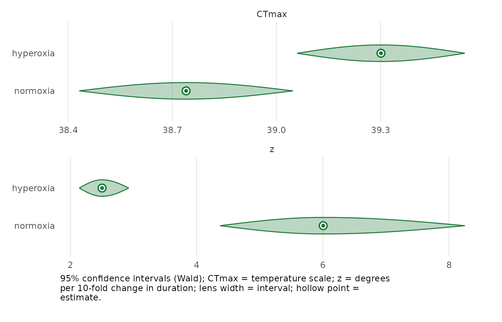

Case 1: zebrafish heat tolerance under normoxia and hyperoxia
Source:vignettes/case-study-zebrafish.Rmd
case-study-zebrafish.RmdThis is the frequentist analogue of Case 1 in the bayesTLS
supplement. It uses the same organism, data, filter, response,
formulas, one-hour reference time, relative threshold, and estimands.
Only the inference engine and uncertainty language differ.
Exact data subset
We retain diploid larvae under normoxia and hyperoxia, including the
26 °C normoxia controls. Hypoxia is deliberately excluded: its duration
design does not identify z well enough for the canonical
comparison.
data(zebrafish_o2)
zf <- droplevels(subset(
zebrafish_o2,
ploidy == "diploid" & oxygen %in% c("normoxia", "hyperoxia")
))
table(zf$oxygen, zf$temp)
#>
#> 26 38 39 40
#> normoxia 119 149 23 23
#> hyperoxia 0 24 23 19
zf_std <- standardize_data(
zf, temp = "temp", duration = "duration_min",
n_total = "n_total", n_surv = "n_surv", duration_unit = "minutes"
)
stopifnot(attr(zf_std, "tdt_meta")$duration_unit == "minutes")Locked model
The response is beta-binomial. CTmax, z,
and low vary by oxygen; up and k
are shared. Because t_ref = 60 is expressed in the
standardized minute unit, CTmax is the relative-midpoint
critical temperature at one hour.
zf_fit <- fit_4pl(
zf_std,
ctmax = ~ 0 + oxygen,
z = ~ 0 + oxygen,
low = ~ 0 + oxygen,
up = ~ 1,
k = ~ 1,
family = "beta_binomial",
t_ref = 60,
method = "wald",
quiet = TRUE
)
diagnose_tdt_fit(zf_fit)
#> # A tibble: 1 × 9
#> converged pd_hessian max_abs_gradient gradient_pass optimizer logLik n_params
#> <lgl> <lgl> <dbl> <lgl> <chr> <dbl> <int>
#> 1 TRUE TRUE 0.000195 TRUE nlminb -280. 9
#> # ℹ 2 more variables: AIC <dbl>, all_pass <lgl>Always inspect the convergence code, Hessian, gradient, and
check_tls() messages before interpretation. This page uses
Wald confidence intervals and names that method explicitly; profile and
bootstrap intervals remain available for sensitivity checks.
zf_tls <- tls(zf_fit, by = "oxygen", lethal = FALSE, method = "wald")
zf_table <- zf_tls$summary
names(zf_table)[names(zf_table) == "median"] <- "estimate"
zf_table
#> # A tibble: 4 × 5
#> oxygen quantity estimate lower upper
#> <chr> <chr> <dbl> <dbl> <dbl>
#> 1 normoxia CTmax 38.7 38.4 39.0
#> 2 hyperoxia CTmax 39.3 39.1 39.5
#> 3 normoxia z 6.01 4.37 8.25
#> 4 hyperoxia z 2.50 2.14 2.92The reported quantities are CTmax and z.
Tcrit is not reported: the hyperoxia design lacks a
benign-temperature control, and the supplement marks this case
lethal = FALSE for extraction.
plot_confidence_eye(zf_fit, parm = c("CTmax", "z"), method = "wald")
Interpretation and boundary
CTmax asks whether hyperoxia shifts the one-hour thermal
limit. z asks whether oxygen changes the rate at which
tolerated duration falls with warming. Agreement with bayesTLS is a
useful cross-check, not proof of correctness: shared data, filter, or
model errors can make both packages agree. Triploid and hypoxia analyses
are not silently substituted here.